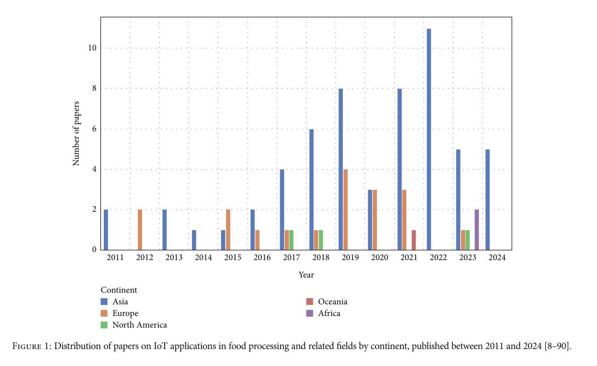
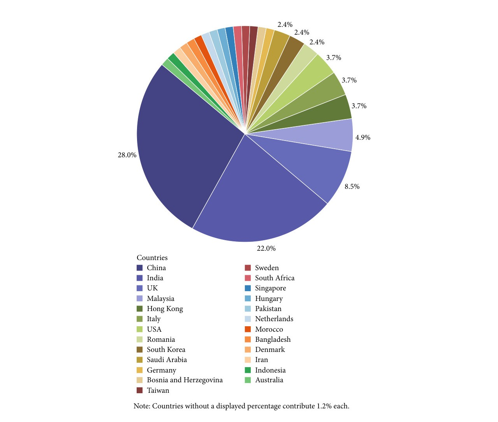
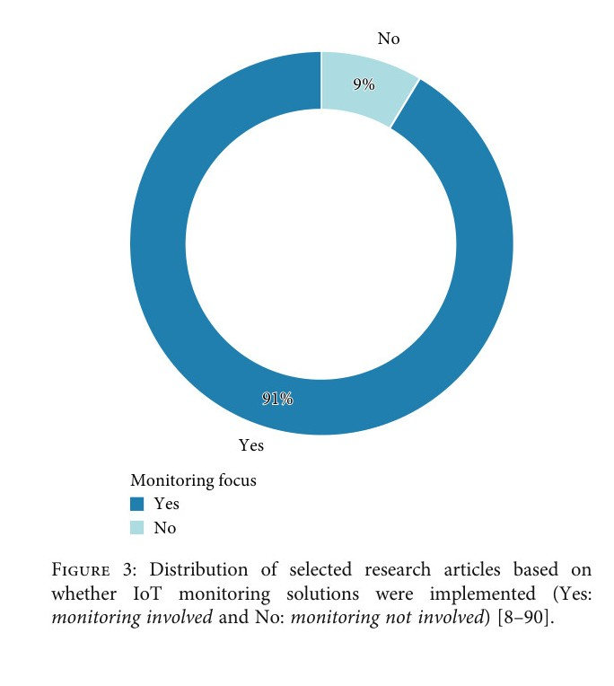
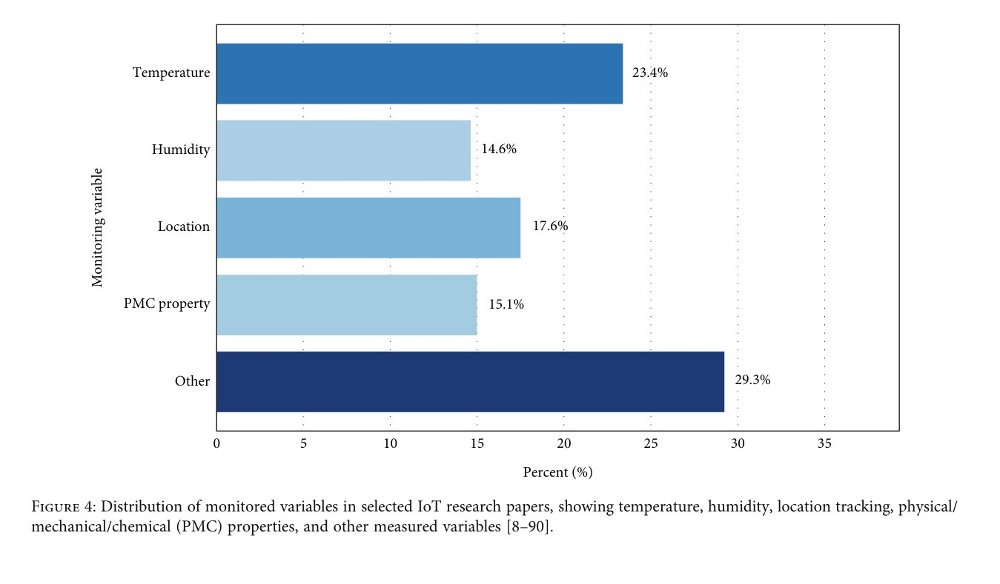
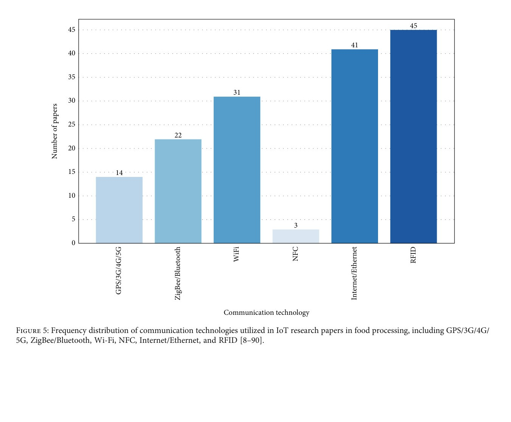
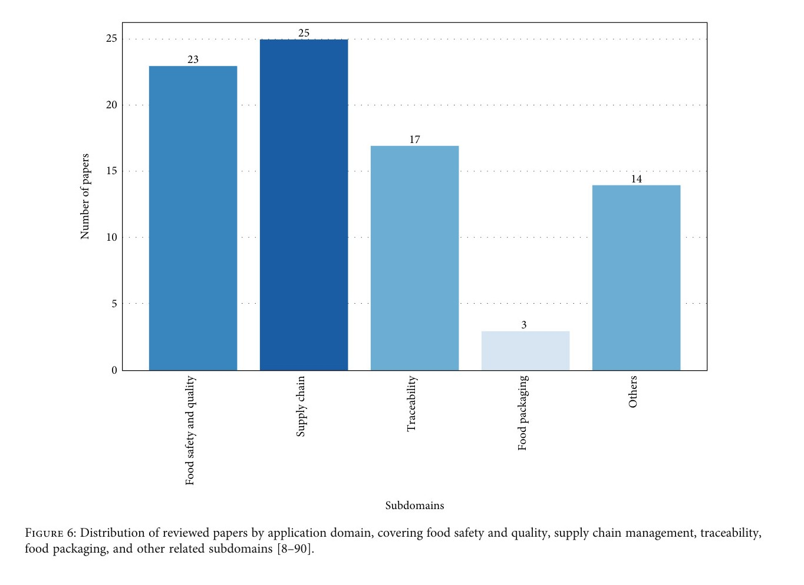
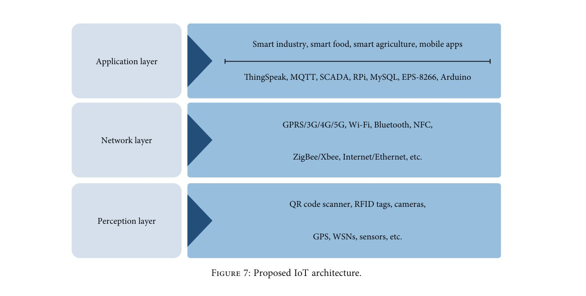

📡 A Review of IoT Applications in Food Processing and Related Fields
Reza Alimadani*, Akinbode A. Adedeji, and Mohammadreza Narimani
Journal of Food Processing and Preservation · Volume 2025 · Article 3064441 · 2025 · Open access CC BY
University of Tehran · University of Kentucky · University of California, Davis
Why IoT in the Agri-Food Chain
Food systems must raise efficiency while land, water, and energy tighten. The Internet of Things can move sensor data from farms, plants, and logistics into decisions on safety, waste, and energy—but deployments remain fragmented, with limited interoperability.
This Wiley open-access systematic review by Reza Alimadani (corresponding author), Akinbode A. Adedeji, and Mohammadreza Narimani synthesizes English-language peer-reviewed studies from 2011–2024. Papers were clustered into food safety and quality, packaging and traceability, supply chain, and waste or contamination. The authors then propose a practical three-layer architecture for food-processing IoT.
Where the Literature Is Concentrated
Publication activity rose through the late 2010s, with Asia contributing the largest share of studies, followed by Europe. Country counts are led by China and India. Application papers cluster most in supply chain (25) and food safety and quality (23), then traceability (17), with fewer dedicated packaging studies.






A Three-Layer Architecture
The proposed stack is deliberately simple so food companies can reuse components: a perception layer (RFID, QR, cameras, GPS, WSNs), a network layer (cellular, Wi-Fi, Bluetooth, ZigBee/XBee, Ethernet), and an application layer (ThingSpeak, MQTT, SCADA, Raspberry Pi, MySQL, Arduino, and related services) for smart industry, food, and agriculture apps.

The review argues that autonomous IoT nodes should sit in a software ecosystem that maximizes reuse. Remaining barriers include interoperability, fragmented platforms, and the gap between pilot sensors and plant-scale quality systems.
Paper and Citation
Alimadani, R., Adedeji, A. A., & Narimani, M. (2025). A review of IoT applications in food processing and related fields. Journal of Food Processing and Preservation, 2025(1), 3064441.
DOI: 10.1155/jfpp/3064441 · Open access under CC BY 4.0
Please cite the publisher version when you use this work. The summary on this page is a research card, not a substitute for the article.
Contact
Mohammadreza Narimani
PhD Candidate, University of California, Davis